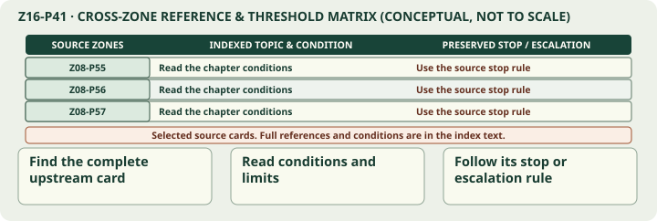

Z16-P41 · Field reference atlas · New manuscript
Public-Land Resource Collection Authority Index (NPS, MN Parks, SNAs)
Locate the original encyclopedia cards for public-Land Resource Collection Authority Index (NPS, MN Parks, SNAs).
When it applies · Offline reference lookup. The linked chapter defines the situation, audience and limits.
Equipment · Offline reader or the complete linked source cards in print.

Actions
- Open Z08-P55 for federal 36 CFR 2.1 National Park Resource Protection; Z08-P56 for minnesota State Parks and Scientific and Natural Areas Rules.[A10, R08, R09]
- Open Z08-P57 for private Land Permission, Gravel Pits and Quarry Hazards; Z05-P10 for foraging Law: State Parks, SNAs, National Parks and Rare Plants.[A10, R11, B22]
- Read the linked card’s applicability, equipment and stop conditions together. Keep review and source limitations attached to any excerpt.[A10, ED]
Failure recognition · Acting on a keyword or title while overlooking an upstream exception or stop condition.[A10, ED]
Verify · Confirm the exact page ID and read the full conditions before using the reference.[A10, ED]
Stop or change course · If the situation falls outside a linked card’s conditions or its stop rule applies, stop using this index as a decision aid. Follow the full card and current local directions.[A10, ED]
Evidence and editorial notes
- A10 · FEMA / Ready.gov · Make a Plan (current web edition)
- Section: Offline reader navigation, historical lineage, and HOLD transparency · Conditions: Using the complete 16-zone offline archive, zone readers, and print proofs
Support: Navigation aids expose draft status, reconstruction lineage, open diagnostic photo needs, and pending specialist holds on every lookup path.
Limitations: This index entry does not independently establish any safety, regulatory or diagnostic instruction. · Conflicting evidence: None noted.
Editorial note: Index design and cross-reference policy. Substantive directions come from linked upstream chapter claims. · Specialist reviewer: Accessibility, print QA, and editorial reviewer
Primary source · checked 2026-11-24 - B22 · Minnesota DNR · Scientific and Natural Areas Visitor Rules and Prohibitions (Current web edition)
- Section: Foraging; No collecting plants, animals, rocks or fossils · Conditions: Minnesota SNA; current site-specific rule
Support: The default restriction applies. A limited personal-use exception exists only where the site rule specifies it.
Limitations: No interchange with state parks, NPS sites, state trails, or private land. · Conflicting evidence: Conditions are recorded in the A03 audit.
Editorial note: Public-land foraging compliance boundary. · Specialist reviewer: Minnesota DNR resource manager
Primary source · checked 2026-11-25 - R08 · National Park Service / eCFR · 36 CFR 2.1 Preservation of Natural, Cultural and Archeological Resources (Current CFR)
- Section: 36 CFR 2.1 natural resource collecting prohibitions · Conditions: National Parks, Monuments, and federal recreation areas
Support: Collecting rocks, minerals, fossils, wood, or natural specimens is prohibited on National Park System lands unless specifically authorized.
Limitations: Rules vary across USFS, BLM, state, tribal, county, and private lands; check the governing land manager before taking any sample. · Conflicting evidence: None noted.
Editorial note: Prevents unlawful federal resource extraction. · Specialist reviewer: Public-lands resource manager
Primary source · checked 2026-11-25 - R09 · Minnesota DNR · Minnesota State Park Rules and Resource Collecting Restrictions (Current web edition)
- Section: State park natural-feature protection · Conditions: Minnesota State Parks and Recreation Areas
Support: Removing rocks, minerals, soil, or live vegetation from Minnesota State Parks is prohibited to protect natural resources.
Limitations: Verify jurisdiction boundaries before picking up specimens even along shorelines or trails. · Conflicting evidence: None noted.
Editorial note: Bounds state-park material collection. · Specialist reviewer: Minnesota DNR resource manager
Primary source · checked 2026-11-25 - R11 · Minnesota DNR · Lake Superior Agate and Public-Land Rock Collecting Guidelines (Current web edition)
- Section: Lawful public-land gravel-pit and road-cut rock collecting limits · Conditions: Unrestricted public gravel areas and authorized private land
Support: Where lawful, rock hounding requires landowner permission on private land and compliance with local safety and collecting limits.
Limitations: Private property, active quarries, road right-of-way hazards, and tribal lands carry separate prohibitions and trespass penalties. · Conflicting evidence: None noted.
Editorial note: Clarifies lawful vs prohibited rock collection. · Specialist reviewer: Public-lands and legal reviewer
Primary source · checked 2026-11-25
Source lineage · New manuscript (Z16 P20 legal index) · Classification · New manuscript.